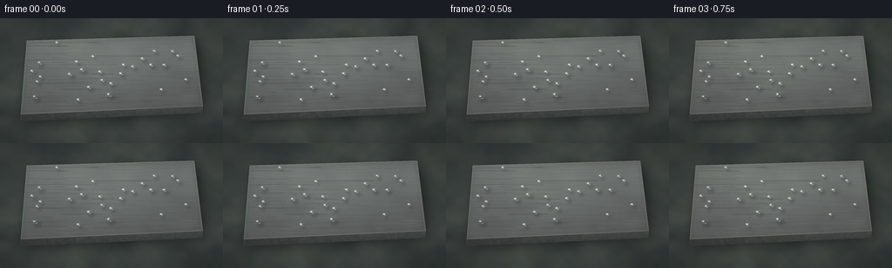
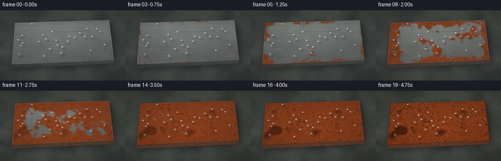
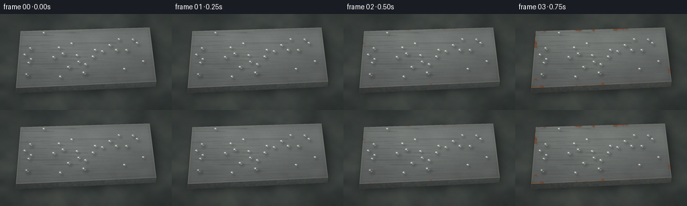
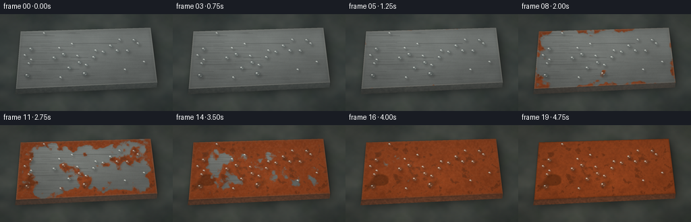
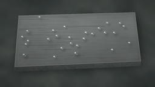
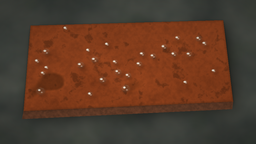
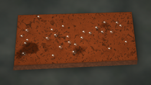

CODING AGENTS AS PIXEL WORLD MODELS
traex/DeepSeek-V4.1-Flash · phygen_156
点击播放 · 原生 RGB 像素
逐轮保存的候选
回放视频、检查图与代码变化。
每份候选均可单独播放。实际图片检查记录在下方工具轨迹中。
候选 01播放与检查图
点击播放 · 原生 RGB 像素

展开代码变化
--- 上一保存版本
+++ 本次保存版本
@@ -0,0 +1,420 @@
+from pathlib import Path
+import json
+import math
+
+import numpy as np
+from PIL import Image, ImageDraw, ImageFilter
+from scipy.ndimage import distance_transform_edt, gaussian_filter
+
+import artifact_io
+
+
+CASE_DIR = Path(__file__).resolve().parent
+SPEC = json.loads((CASE_DIR / "task_spec.json").read_text())
+WIDTH = int(SPEC["width"])
+HEIGHT = int(SPEC["height"])
+FRAME_COUNT = int(SPEC["frames"])
+FPS = float(SPEC["fps"])
+
+# Supersampling keeps the small final frames clean without using any external renderer.
+SS = 4
+W = WIDTH * SS
+H = HEIGHT * SS
+
+
+def smoothstep(edge0, edge1, value):
+ x = np.clip((value - edge0) / (edge1 - edge0), 0.0, 1.0)
+ return x * x * (3.0 - 2.0 * x)
+
+
+def normalized(array):
+ low = float(array.min())
+ high = float(array.max())
+ return (array - low) / max(high - low, 1e-6)
+
+
+def value_noise(shape, cell_x, cell_y, rng):
+ height, width = shape
+ small_h = max(3, int(math.ceil(height / cell_y)) + 3)
+ small_w = max(3, int(math.ceil(width / cell_x)) + 3)
+ small = rng.random((small_h, small_w), dtype=np.float32)
+ image = Image.fromarray(small, mode="F")
+ image = image.resize((width, height), Image.Resampling.BICUBIC)
+ return np.asarray(image, dtype=np.float32)
+
+
+def fbm(shape, cell, rng, octaves=5, gain=0.52):
+ result = np.zeros(shape, dtype=np.float32)
+ weight_sum = 0.0
+ weight = 1.0
+ for octave in range(octaves):
+ scale = cell / (2 ** octave)
+ result += weight * value_noise(shape, scale, scale, rng)
+ weight_sum += weight
+ weight *= gain
+ return normalized(result / weight_sum)
+
+
+def polygon_mask(points):
+ image = Image.new("L", (W, H), 0)
+ draw = ImageDraw.Draw(image)
+ draw.polygon([(int(x * SS), int(y * SS)) for x, y in points], fill=255)
+ return np.asarray(image, dtype=np.float32) / 255.0
+
+
+def shifted(array, dy, dx, fill=0.0):
+ result = np.full_like(array, fill)
+ src_y0 = max(0, -dy)
+ src_y1 = min(array.shape[0], array.shape[0] - dy)
+ src_x0 = max(0, -dx)
+ src_x1 = min(array.shape[1], array.shape[1] - dx)
+ dst_y0 = max(0, dy)
+ dst_y1 = min(array.shape[0], array.shape[0] + dy)
+ dst_x0 = max(0, dx)
+ dst_x1 = min(array.shape[1], array.shape[1] + dx)
+ result[dst_y0:dst_y1, dst_x0:dst_x1] = array[src_y0:src_y1, src_x0:src_x1]
+ return result
+
+
+def tinted_overlay(base, color, alpha):
+ alpha_3 = np.clip(alpha, 0.0, 1.0)[..., None]
+ target = np.asarray(color, dtype=np.float32)
+ return base * (1.0 - alpha_3) + target * alpha_3
+
+
+def rgba_array(rgb, alpha):
+ output = np.empty((H, W, 4), dtype=np.float32)
+ output[..., :3] = rgb
+ output[..., 3] = alpha
+ return output
+
+
+def compose_rgba(base, rgba):
+ alpha = np.clip(rgba[..., 3], 0.0, 1.0)[..., None]
+ return base * (1.0 - alpha) + rgba[..., :3] * alpha
+
+
+def make_droplet_assets(droplets):
+ body = Image.new("L", (W, H), 0)
+ rim = Image.new("L", (W, H), 0)
+ highlight = Image.new("L", (W, H), 0)
+ shadow = Image.new("L", (W, H), 0)
+
+ body_draw = ImageDraw.Draw(body)
+ rim_draw = ImageDraw.Draw(rim)
+ highlight_draw = ImageDraw.Draw(highlight)
+ shadow_draw = ImageDraw.Draw(shadow)
+
+ for x, y, radius in droplets:
+ x *= SS
+ y *= SS
+ radius *= SS
+ rx = radius
+ ry = radius * 0.78
+
+ shadow_draw.ellipse(
+ (x - rx * 1.08 + 2.5 * SS, y - ry * 1.05 + 3.0 * SS,
+ x + rx * 1.08 + 2.5 * SS, y + ry * 1.05 + 3.0 * SS),
+ fill=150,
+ )
+ body_draw.ellipse((x - rx, y - ry, x + rx, y + ry), fill=255)
+ rim_draw.ellipse(
+ (x - rx, y - ry, x + rx, y + ry),
+ outline=225,
+ width=max(1, int(radius * 0.12)),
+ )
+
+ # A crisp, off-center reflection makes the beads read as water at low resolution.
+ hx = x - rx * 0.34
+ hy = y - ry * 0.35
+ hrx = max(1.2 * SS, rx * 0.24)
+ hry = max(0.8 * SS, ry * 0.16)
+ highlight_draw.ellipse((hx - hrx, hy - hry, hx + hrx, hy + hry), fill=245)
+ bx = x + rx * 0.26
+ by = y + ry * 0.34
+ brx = max(0.8 * SS, rx * 0.12)
+ bry = max(0.5 * SS, ry * 0.08)
+ highlight_draw.ellipse((bx - brx, by - bry, bx + brx, by + bry), fill=120)
+
+ body_np = np.asarray(body.filter(ImageFilter.GaussianBlur(0.55 * SS)), dtype=np.float32) / 255.0
+ rim_np = np.asarray(rim.filter(ImageFilter.GaussianBlur(0.25 * SS)), dtype=np.float32) / 255.0
+ highlight_np = np.asarray(
+ highlight.filter(ImageFilter.GaussianBlur(0.25 * SS)), dtype=np.float32
+ ) / 255.0
+ shadow_np = np.asarray(shadow.filter(ImageFilter.GaussianBlur(1.25 * SS)), dtype=np.float32) / 255.0
+ return body_np, rim_np, highlight_np, shadow_np
+
+
+def build_scene():
+ rng = np.random.default_rng(156_041)
+ yy, xx = np.mgrid[0:H, 0:W].astype(np.float32)
+ u = xx / (W - 1)
+ v = yy / (H - 1)
+
+ # A broad slab viewed slightly from above, with a thick lower face.
+ top_polygon = [(30.5, 25.5), (223.0, 20.0), (233.0, 101.5), (23.5, 111.0)]
+ side_polygon = [(23.5, 111.0), (233.0, 101.5), (232.0, 109.2), (22.0, 119.0)]
+ top_mask = polygon_mask(top_polygon)
+ side_mask = polygon_mask(side_polygon)
+
+ # Wet concrete in the background, deliberately soft so the iron remains the subject.
+ bg_coarse = fbm((H, W), 210, rng, octaves=4)
+ bg_mid = fbm((H, W), 42, rng, octaves=4)
+ bg_fine = fbm((H, W), 7, rng, octaves=3)
+ bg = np.empty((H, W, 3), dtype=np.float32)
+ bg[..., 0] = 49 + 30 * bg_coarse + 7 * bg_mid
+ bg[..., 1] = 57 + 29 * bg_coarse + 5 * bg_mid
+ bg[..., 2] = 57 + 25 * bg_coarse + 4 * bg_mid
+ bg += (bg_fine[..., None] - 0.5) * np.array([8.0, 7.0, 6.0], dtype=np.float32)
+
+ moss = smoothstep(0.62, 0.82, fbm((H, W), 120, rng, octaves=4))
+ bg = tinted_overlay(bg, (49, 67, 48), 0.13 * moss)
+ wet = smoothstep(0.56, 0.80, fbm((H, W), 95, rng, octaves=4))
+ bg = tinted_overlay(bg, (44, 59, 61), 0.15 * wet)
+ bg = np.asarray(
+ Image.fromarray(np.clip(bg, 0, 255).astype(np.uint8)).filter(
+ ImageFilter.GaussianBlur(1.8 * SS)
+ ),
+ dtype=np.float32,
+ )
+
+ # Soft cast shadow and a darker contact edge ground the object.
+ shadow_mask = shifted(top_mask, int(8.5 * SS), int(4.5 * SS))
+ shadow_mask = gaussian_filter(shadow_mask, 7.5 * SS)
+ bg *= (1.0 - 0.48 * np.clip(shadow_mask, 0.0, 1.0))[..., None]
+ contact = gaussian_filter(shifted(top_mask, int(3.5 * SS), 0), 1.5 * SS)
+ bg *= (1.0 - 0.22 * np.clip(contact, 0.0, 1.0))[..., None]
+
+ # Steel side wall, with its own darkening toward the contact line.
+ side_height = np.clip((yy / H - 0.68) / 0.16, 0.0, 1.0)
+ side_tex = fbm((H, W), 13, rng, octaves=3)
+ side_color = np.empty((H, W, 3), dtype=np.float32)
+ side_color[..., 0] = 71 - 22 * side_height + 15 * side_tex
+ side_color[..., 1] = 77 - 24 * side_height + 14 * side_tex
+ side_color[..., 2] = 76 - 24 * side_height + 12 * side_tex
+
+ # Brushed steel top. The long, fine grain is stretched horizontally.
+ brushed = normalized(value_noise((H, W), 150, 2.0, rng) * 0.7 + fbm((H, W), 9, rng, 4) * 0.3)
+ grain = fbm((H, W), 2.2, rng, 3)
+ broad = fbm((H, W), 170, rng, 4)
+ light_band = np.exp(-((v - (0.18 + 0.13 * u)) / 0.22) ** 2)
+ cross_band = np.exp(-((u - 0.27) / 0.32) ** 2)
+ metal_luma = (
+ 91
+ + 20 * (1.0 - v)
+ + 16 * light_band
+ + 7 * cross_band
+ + 12 * (broad - 0.5)
+ + 10 * (brushed - 0.5)
+ + 5 * (grain - 0.5)
+ )
+ metal = np.empty((H, W, 3), dtype=np.float32)
+ metal[..., 0] = metal_luma * 0.98
+ metal[..., 1] = metal_luma * 1.02
+ metal[..., 2] = metal_luma * 1.00
+
+ # Sparse hairline scratches break up the otherwise perfect initial surface.
+ scratch_img = Image.new("RGBA", (W, H), (0, 0, 0, 0))
+ scratch_draw = ImageDraw.Draw(scratch_img)
+ for _ in range(58):
+ sy = rng.uniform(0.19, 0.74) * H
+ sx = rng.uniform(0.10, 0.45) * W
+ length = rng.uniform(0.04, 0.34) * W
+ slope = rng.uniform(-0.012, 0.008)
+ bright = int(rng.uniform(20, 55))
+ scratch_draw.line(
+ [(sx, sy), (sx + length, sy + length * slope)],
+ fill=(185, 191, 188, bright),
+ width=max(1, int(rng.uniform(0.25, 0.8) * SS)),
+ )
+ scratch_img = scratch_img.filter(ImageFilter.GaussianBlur(0.16 * SS))
+ scratch = np.asarray(scratch_img, dtype=np.float32) / 255.0
+ metal = compose_rgba(metal, scratch)
+
+ # Stable organic fields drive corrosion. Edge distance and droplets act as seed sites.
+ edge_distance = distance_transform_edt(top_mask > 0.5)
+ edge_bonus = np.exp(-edge_distance / (15.0 * SS))
+ bottom_bonus = np.exp(-(1.0 - v) / 0.105) * top_mask
+ rust_noise_a = fbm((H, W), 135, rng, octaves=5)
+ rust_noise_b = fbm((H, W), 39, rng, octaves=4)
+ rust_noise_c = fbm((H, W), 9, rng, octaves=3)
+ rust_noise_d = fbm((H, W), 260, rng, octaves=3)
+
+ # Place water beads using rejection sampling against the slab mask and edge distance.
+ droplets = []
+ edge_distance_logical = edge_distance / SS
+ attempts = 0
+ while len(droplets) < 27 and attempts < 10000:
+ attempts += 1
+ x = rng.uniform(35.0, 221.0)
+ y = rng.uniform(27.0, 104.0)
+ radius = float(rng.choice([2.0, 2.5, 3.0, 3.5, 4.2, 5.2], p=[0.12, 0.22, 0.26, 0.21, 0.14, 0.05]))
+ px = int(np.clip(x * SS, 0, W - 1))
+ py = int(np.clip(y * SS, 0, H - 1))
+ if top_mask[py, px] < 0.5 or edge_distance_logical[py, px] < radius * 1.5:
+ continue
+ if any((x - dx) ** 2 + (y - dy) ** 2 < (radius + dr + 2.1) ** 2 for dx, dy, dr in droplets):
+ continue
+ droplets.append((x, y, radius))
+ droplets.sort(key=lambda item: item[2], reverse=True)
+ body_alpha, rim_alpha, highlight_alpha, drop_shadow = make_droplet_assets(droplets)
+
+ drop_seed_img = Image.new("L", (W, H), 0)
+ drop_seed_draw = ImageDraw.Draw(drop_seed_img)
+ for x, y, radius in droplets:
+ r = radius * SS * 1.55
+ drop_seed_draw.ellipse(
+ (x * SS - r, y * SS - r, x * SS + r, y * SS + r),
+ fill=255,
+ )
+ drop_seed = gaussian_filter(np.asarray(drop_seed_img, dtype=np.float32) / 255.0, 4.5 * SS)
+ drop_seed = normalized(drop_seed) * top_mask
+
+ rust_score = (
+ 0.50 * rust_noise_a
+ + 0.30 * rust_noise_b
+ + 0.38 * edge_bonus
+ + 0.16 * bottom_bonus
+ + 0.15 * drop_seed
+ )
+
+ # A narrow bevel catches the light at the beginning and darkens as corrosion builds.
+ bevel = np.clip(1.0 - edge_distance / (2.4 * SS), 0.0, 1.0) * top_mask
+ bevel_outer = np.clip(1.0 - edge_distance / (5.5 * SS), 0.0, 1.0) * top_mask
+
+ # Fixed optical vignette and subtle atmospheric bloom.
+ cx = (u - 0.50) * 1.08
+ cy = (v - 0.49) * 1.18
+ vignette = np.clip(1.0 - 0.38 * (cx * cx + cy * cy) ** 0.72, 0.62, 1.0)
+
+ return {
+ "u": u,
+ "v": v,
+ "top_mask": top_mask,
+ "side_mask": side_mask,
+ "bg": bg,
+ "side_color": side_color,
+ "metal": metal,
+ "edge_distance": edge_distance,
+ "edge_bonus": edge_bonus,
+ "rust_score": rust_score,
+ "rust_noise_b": rust_noise_b,
+ "rust_noise_c": rust_noise_c,
+ "rust_noise_d": rust_noise_d,
+ "body_alpha": body_alpha,
+ "rim_alpha": rim_alpha,
+ "highlight_alpha": highlight_alpha,
+ "drop_shadow": drop_shadow,
+ "bevel": bevel,
+ "bevel_outer": bevel_outer,
+ "vignette": vignette,
+ }
+
+
+def render_frame(scene, frame_index):
+ t = frame_index / max(FRAME_COUNT - 1, 1)
+ p = t ** 1.35
+
+ top_mask = scene["top_mask"]
+ side_mask = scene["side_mask"]
+ image = scene["bg"].copy()
+
+ # Side face: steel becomes a rough, dark oxide skin over the sequence.
+ side_rust = smoothstep(0.05, 0.85, p)
+ side_tex = scene["rust_noise_c"]
+ side_final = scene["side_color"].copy()
+ side_final[..., 0] = 63 + 35 * side_tex + 18 * side_rust
+ side_final[..., 1] = 48 + 19 * side_tex + 5 * side_rust
+ side_final[..., 2] = 40 + 12 * side_tex
+ side_color = scene["side_color"] * (1.0 - side_rust) + side_final * side_rust
+ image = tinted_overlay(image, side_color, side_mask * 0.98)
+
+ # Top face and a thin, dark contact line.
+ metal = scene["metal"].copy()
+ image = tinted_overlay(image, metal, top_mask)
+ dark_edge = np.clip(gaussian_filter(top_mask, 0.55 * SS) - top_mask, 0.0, 1.0)
+ image *= (1.0 - 0.28 * dark_edge)[..., None]
+
+ # Corrosion onset begins at exposed edges and around moisture, then fills inward.
+ presence = smoothstep(0.008, 0.060, p)
+ threshold = 1.115 - 1.035 * p
+ rust = smoothstep(threshold - 0.040, threshold + 0.040, scene["rust_score"])
+ rust *= presence * top_mask
+
+ # Keep isolated pinholes and clean islands so late rust remains visually porous.
+ islands = smoothstep(0.66, 0.76, scene["rust_noise_c"] + 0.12 * scene["rust_noise_b"])
+ rust *= 1.0 - 0.22 * islands * (1.0 - p)
+
+ rust_tone = (
+ 0.44 * scene["rust_noise_b"]
+ + 0.34 * scene["rust_noise_c"]
+ + 0.22 * scene["rust_noise_d"]
+ )
+ rust_rgb = np.empty((H, W, 3), dtype=np.float32)
+ rust_rgb[..., 0] = 105 + 67 * rust_tone
+ rust_rgb[..., 1] = 46 + 33 * rust_tone
+ rust_rgb[..., 2] = 21 + 16 * rust_tone
+
+ orange_flakes = smoothstep(0.70, 0.86, scene["rust_noise_d"]) * rust
+ rust_rgb[..., 0] += 27 * orange_flakes
+ rust_rgb[..., 1] += 13 * orange_flakes
+ rust_rgb[..., 2] += 4 * orange_flakes
+
+ dark_oxide = smoothstep(0.57, 0.78, scene["rust_noise_b"] * 0.72 + scene["rust_noise_c"] * 0.28)
+ rust_rgb *= (1.0 - 0.30 * dark_oxide)[..., None]
+
+ pits = smoothstep(0.73, 0.86, scene["rust_noise_d"]) * rust
+ rust_rgb *= (1.0 - 0.38 * pits)[..., None]
+
+ # Low-relief corrosion casts a small shadow toward the lower right.
+ rust_soft = gaussian_filter(rust, 1.4 * SS)
+ rust_shadow = np.clip(shifted(rust_soft, int(1.2 * SS), int(1.2 * SS)) - rust_soft, 0.0, 1.0)
+ rust_light = np.clip(rust_soft - shifted(rust_soft, int(1.0 * SS), int(1.0 * SS)), 0.0, 1.0)
+ rust_rgb += rust_light[..., None] * np.array([14.0, 7.0, 3.0], dtype=np.float32)
+ image *= (1.0 - 0.20 * rust_shadow)[..., None]
+ image = tinted_overlay(image, rust_rgb, rust * (0.91 + 0.05 * rust_tone))
+
+ # Bevel changes from a clean bright lip into dark corroded metal.
+ clean_bevel = np.array([178.0, 181.0, 172.0], dtype=np.float32)
+ rusty_bevel = np.array([92.0, 51.0, 31.0], dtype=np.float32)
+ bevel_color = clean_bevel * (1.0 - p) + rusty_bevel * p
+ bevel_alpha = scene["bevel"] * (0.34 + 0.16 * p)
+ image = tinted_overlay(image, bevel_color, bevel_alpha)
+ image = tinted_overlay(image, (43, 45, 42), scene["bevel_outer"] * 0.12 * (1.0 - p))
+
+ # Water beads sit above the corrosion, with a restrained cool tint.
+ image *= (1.0 - 0.23 * scene["drop_shadow"] * top_mask)[..., None]
+ water_color = np.array([88.0, 104.0, 105.0], dtype=np.float32)
+ water_color = water_color * (1.0 - 0.22 * p) + np.array([102.0, 83.0, 62.0], dtype=np.float32) * (0.22 * p)
+ image = tinted_overlay(image, water_color, scene["body_alpha"] * 0.20 * top_mask)
+ image = tinted_overlay(image, (29, 35, 35), scene["rim_alpha"] * 0.35 * top_mask)
+ image = tinted_overlay(image, (231, 235, 227), scene["highlight_alpha"] * 0.78 * top_mask)
+
+ # A faint humid veil keeps the surface from looking digitally dry.
+ humid = smoothstep(0.48, 0.86, scene["rust_noise_b"]) * top_mask
+ image = tinted_overlay(image, (104, 114, 110), humid * 0.035 * (1.0 - 0.5 * p))
+
+ # Slight warming and contrast increase as oxidation takes hold.
+ image += np.array([3.0, 0.0, -3.0], dtype=np.float32) * p
+ mean = np.array([84.0, 84.0, 82.0], dtype=np.float32)
+ image = mean + (image - mean) * (1.0 + 0.05 * p)
+ image *= scene["vignette"][..., None]
+
+ # Fine fixed grain avoids banding after downsampling.
+ grain = scene["rust_noise_d"] - 0.5
+ image += grain[..., None] * 2.2
+ image = np.clip(image, 0, 255).astype(np.uint8)
+
+ frame = Image.fromarray(image).resize((WIDTH, HEIGHT), Image.Resampling.LANCZOS)
+ return np.asarray(frame, dtype=np.uint8)
+
+
+def main():
+ scene = build_scene()
+ frames = np.stack([render_frame(scene, index) for index in range(FRAME_COUNT)])
+ artifact_io.save(frames, CASE_DIR)
+ print(f"saved {frames.shape} at {FPS:g} fps to {CASE_DIR}")
+
+
+if __name__ == "__main__":
+ main()
候选 02播放与检查图
点击播放 · 原生 RGB 像素

展开代码变化
--- 上一保存版本
+++ 本次保存版本
@@ -38,7 +38,7 @@
small_h = max(3, int(math.ceil(height / cell_y)) + 3)
small_w = max(3, int(math.ceil(width / cell_x)) + 3)
small = rng.random((small_h, small_w), dtype=np.float32)
- image = Image.fromarray(small, mode="F")
+ image = Image.fromarray(small)
image = image.resize((width, height), Image.Resampling.BICUBIC)
return np.asarray(image, dtype=np.float32)
@@ -97,11 +97,15 @@
def make_droplet_assets(droplets):
body = Image.new("L", (W, H), 0)
rim = Image.new("L", (W, H), 0)
+ rim_light = Image.new("L", (W, H), 0)
+ rim_dark = Image.new("L", (W, H), 0)
highlight = Image.new("L", (W, H), 0)
shadow = Image.new("L", (W, H), 0)
body_draw = ImageDraw.Draw(body)
rim_draw = ImageDraw.Draw(rim)
+ rim_light_draw = ImageDraw.Draw(rim_light)
+ rim_dark_draw = ImageDraw.Draw(rim_dark)
highlight_draw = ImageDraw.Draw(highlight)
shadow_draw = ImageDraw.Draw(shadow)
@@ -120,8 +124,22 @@
body_draw.ellipse((x - rx, y - ry, x + rx, y + ry), fill=255)
rim_draw.ellipse(
(x - rx, y - ry, x + rx, y + ry),
- outline=225,
- width=max(1, int(radius * 0.12)),
+ outline=210,
+ width=max(1, int(radius * 0.075)),
+ )
+ rim_light_draw.arc(
+ (x - rx, y - ry, x + rx, y + ry),
+ start=193,
+ end=322,
+ fill=235,
+ width=max(1, int(radius * 0.09)),
+ )
+ rim_dark_draw.arc(
+ (x - rx, y - ry, x + rx, y + ry),
+ start=13,
+ end=142,
+ fill=220,
+ width=max(1, int(radius * 0.075)),
)
# A crisp, off-center reflection makes the beads read as water at low resolution.
@@ -138,11 +156,17 @@
body_np = np.asarray(body.filter(ImageFilter.GaussianBlur(0.55 * SS)), dtype=np.float32) / 255.0
rim_np = np.asarray(rim.filter(ImageFilter.GaussianBlur(0.25 * SS)), dtype=np.float32) / 255.0
+ rim_light_np = np.asarray(
+ rim_light.filter(ImageFilter.GaussianBlur(0.20 * SS)), dtype=np.float32
+ ) / 255.0
+ rim_dark_np = np.asarray(
+ rim_dark.filter(ImageFilter.GaussianBlur(0.20 * SS)), dtype=np.float32
+ ) / 255.0
highlight_np = np.asarray(
highlight.filter(ImageFilter.GaussianBlur(0.25 * SS)), dtype=np.float32
) / 255.0
shadow_np = np.asarray(shadow.filter(ImageFilter.GaussianBlur(1.25 * SS)), dtype=np.float32) / 255.0
- return body_np, rim_np, highlight_np, shadow_np
+ return body_np, rim_np, rim_light_np, rim_dark_np, highlight_np, shadow_np
def build_scene():
@@ -257,7 +281,14 @@
continue
droplets.append((x, y, radius))
droplets.sort(key=lambda item: item[2], reverse=True)
- body_alpha, rim_alpha, highlight_alpha, drop_shadow = make_droplet_assets(droplets)
+ (
+ body_alpha,
+ rim_alpha,
+ rim_light_alpha,
+ rim_dark_alpha,
+ highlight_alpha,
+ drop_shadow,
+ ) = make_droplet_assets(droplets)
drop_seed_img = Image.new("L", (W, H), 0)
drop_seed_draw = ImageDraw.Draw(drop_seed_img)
@@ -303,6 +334,8 @@
"rust_noise_d": rust_noise_d,
"body_alpha": body_alpha,
"rim_alpha": rim_alpha,
+ "rim_light_alpha": rim_light_alpha,
+ "rim_dark_alpha": rim_dark_alpha,
"highlight_alpha": highlight_alpha,
"drop_shadow": drop_shadow,
"bevel": bevel,
@@ -384,11 +417,13 @@
# Water beads sit above the corrosion, with a restrained cool tint.
image *= (1.0 - 0.23 * scene["drop_shadow"] * top_mask)[..., None]
- water_color = np.array([88.0, 104.0, 105.0], dtype=np.float32)
- water_color = water_color * (1.0 - 0.22 * p) + np.array([102.0, 83.0, 62.0], dtype=np.float32) * (0.22 * p)
- image = tinted_overlay(image, water_color, scene["body_alpha"] * 0.20 * top_mask)
- image = tinted_overlay(image, (29, 35, 35), scene["rim_alpha"] * 0.35 * top_mask)
- image = tinted_overlay(image, (231, 235, 227), scene["highlight_alpha"] * 0.78 * top_mask)
+ water_color = np.array([119.0, 137.0, 136.0], dtype=np.float32)
+ water_color = water_color * (1.0 - 0.20 * p) + np.array([123.0, 101.0, 78.0], dtype=np.float32) * (0.20 * p)
+ image = tinted_overlay(image, water_color, scene["body_alpha"] * 0.15 * top_mask)
+ image = tinted_overlay(image, (43, 51, 51), scene["rim_alpha"] * 0.11 * top_mask)
+ image = tinted_overlay(image, (226, 238, 234), scene["rim_light_alpha"] * 0.32 * top_mask)
+ image = tinted_overlay(image, (22, 27, 27), scene["rim_dark_alpha"] * 0.24 * top_mask)
+ image = tinted_overlay(image, (241, 245, 236), scene["highlight_alpha"] * 0.94 * top_mask)
# A faint humid veil keeps the surface from looking digitally dry.
humid = smoothstep(0.48, 0.86, scene["rust_noise_b"]) * top_mask
候选 03播放与检查图
点击播放 · 原生 RGB 像素

展开代码变化
代码未变化；重新保存了产物。
候选 04播放与检查图
点击播放 · 原生 RGB 像素

展开代码变化
--- 上一保存版本
+++ 本次保存版本
@@ -346,7 +346,9 @@
def render_frame(scene, frame_index):
t = frame_index / max(FRAME_COUNT - 1, 1)
- p = t ** 1.35
+ # Near-linear progression leaves the initial steel readable while keeping
+ # the last frames alive as pits and crust continue to develop.
+ p = t ** 1.08
top_mask = scene["top_mask"]
side_mask = scene["side_mask"]
@@ -370,7 +372,7 @@
# Corrosion onset begins at exposed edges and around moisture, then fills inward.
presence = smoothstep(0.008, 0.060, p)
- threshold = 1.115 - 1.035 * p
+ threshold = 1.020 - 1.000 * p
rust = smoothstep(threshold - 0.040, threshold + 0.040, scene["rust_score"])
rust *= presence * top_mask
@@ -393,11 +395,11 @@
rust_rgb[..., 1] += 13 * orange_flakes
rust_rgb[..., 2] += 4 * orange_flakes
- dark_oxide = smoothstep(0.57, 0.78, scene["rust_noise_b"] * 0.72 + scene["rust_noise_c"] * 0.28)
- rust_rgb *= (1.0 - 0.30 * dark_oxide)[..., None]
-
- pits = smoothstep(0.73, 0.86, scene["rust_noise_d"]) * rust
- rust_rgb *= (1.0 - 0.38 * pits)[..., None]
+ dark_oxide = smoothstep(0.55, 0.80, scene["rust_noise_b"] * 0.72 + scene["rust_noise_c"] * 0.28)
+ rust_rgb *= (1.0 - (0.16 + 0.18 * p) * dark_oxide)[..., None]
+
+ pits = smoothstep(0.69, 0.84, scene["rust_noise_d"]) * rust
+ rust_rgb *= (1.0 - (0.22 + 0.22 * p) * pits)[..., None]
# Low-relief corrosion casts a small shadow toward the lower right.
rust_soft = gaussian_filter(rust, 1.4 * SS)
候选 05播放与检查图
候选 06播放与检查图
点击播放 · 原生 RGB 像素


展开代码变化
--- 上一保存版本
+++ 本次保存版本
@@ -349,6 +349,7 @@
# Near-linear progression leaves the initial steel readable while keeping
# the last frames alive as pits and crust continue to develop.
p = t ** 1.08
+ late = smoothstep(0.42, 1.0, t)
top_mask = scene["top_mask"]
side_mask = scene["side_mask"]
@@ -391,15 +392,22 @@
rust_rgb[..., 2] = 21 + 16 * rust_tone
orange_flakes = smoothstep(0.70, 0.86, scene["rust_noise_d"]) * rust
- rust_rgb[..., 0] += 27 * orange_flakes
- rust_rgb[..., 1] += 13 * orange_flakes
- rust_rgb[..., 2] += 4 * orange_flakes
+ rust_rgb[..., 0] += (27 + 9 * late) * orange_flakes
+ rust_rgb[..., 1] += (13 - 3 * late) * orange_flakes
+ rust_rgb[..., 2] += (4 - 3 * late) * orange_flakes
dark_oxide = smoothstep(0.55, 0.80, scene["rust_noise_b"] * 0.72 + scene["rust_noise_c"] * 0.28)
rust_rgb *= (1.0 - (0.16 + 0.18 * p) * dark_oxide)[..., None]
pits = smoothstep(0.69, 0.84, scene["rust_noise_d"]) * rust
- rust_rgb *= (1.0 - (0.22 + 0.22 * p) * pits)[..., None]
+ rust_rgb *= (1.0 - (0.22 + 0.22 * p + 0.12 * late) * pits)[..., None]
+
+ # Newly exposed metal appears inside the thickest crust during the final
+ # decades, preventing the fully rusted surface from becoming a flat blanket.
+ crust_pits = smoothstep(0.67, 0.81, scene["rust_noise_c"] + 0.16 * scene["rust_noise_d"])
+ crust_pits *= rust * late
+ rust_rgb *= (1.0 - 0.34 * crust_pits)[..., None]
+ rust_rgb += crust_pits[..., None] * np.array([5.0, 7.0, 7.0], dtype=np.float32)
# Low-relief corrosion casts a small shadow toward the lower right.
rust_soft = gaussian_filter(rust, 1.4 * SS)
@@ -407,7 +415,7 @@
rust_light = np.clip(rust_soft - shifted(rust_soft, int(1.0 * SS), int(1.0 * SS)), 0.0, 1.0)
rust_rgb += rust_light[..., None] * np.array([14.0, 7.0, 3.0], dtype=np.float32)
image *= (1.0 - 0.20 * rust_shadow)[..., None]
- image = tinted_overlay(image, rust_rgb, rust * (0.91 + 0.05 * rust_tone))
+ image = tinted_overlay(image, rust_rgb, rust * (0.91 + 0.05 * rust_tone + 0.025 * late))
# Bevel changes from a clean bright lip into dark corroded metal.
clean_bevel = np.array([178.0, 181.0, 172.0], dtype=np.float32)
可观测工具轨迹
实际执行的命令与返回图片。
命令 1exit 0
/bin/bash -lc "pwd && rg --files -g '"'!*.mp4'"' -g '"'!*.mov'"' -g '"'!*.webm'"' | sort | head -200"
命令 2exit 0
/bin/bash -lc 'cat prompt.txt'
命令 3exit 0
/bin/bash -lc 'cat task_spec.json'
命令 4exit 0
/bin/bash -lc 'cat GENERATION_RULES.md'
命令 5exit 0
/bin/bash -lc "sed -n '1,240p' artifact_io.py"
命令 6exit 0
/bin/bash -lc "python - <<'PY'
import numpy, PIL
print('numpy', numpy.__version__)
print('PIL', PIL.__version__)
try:
import scipy
print('scipy', scipy.__version__)
except Exception as e: print('no scipy', e)
try:
import imageio
print('imageio', imageio.__version__)
except Exception as e: print('no imageio', e)
PY"命令 7exit 0
/bin/bash -lc 'which ffmpeg || true; git status --short 2>/dev/null || true'
命令 8exit 0
/bin/bash -lc 'python generate.py'
命令 9exit 0
/bin/bash -lc 'mkdir -p candidates/candidate_01/frames && cp inspection.png transition_check.png pixels.npz candidates/candidate_01/ && cp frames/*.png candidates/candidate_01/frames/'
命令 10exit 0
/bin/bash -lc 'python generate.py'
命令 11exit 0
/bin/bash -lc "mkdir -p candidates/candidate_02/frames && cp inspection.png transition_check.png pixels.npz candidates/candidate_02/ && cp frames/*.png candidates/candidate_02/frames/ && python - <<'PY'
from pathlib import Path
import numpy as np
from PIL import Image
files=sorted(Path('frames').glob('*.png'))
arr=np.stack([np.asarray(Image.open(p)) for p in files])
d=np.abs(np.diff(arr.astype(np.int16),axis=0))
print('frames',arr.shape,'range',arr.min(),arr.max())
print('temporal diff mean/max per step',np.round(d.mean((1,2,3)),2).tolist(),int(d.max()))
print('unique colors frame0',len(np.unique(arr[0].reshape(-1,3),axis=0)))
PY"命令 12exit 0
/bin/bash -lc 'python generate.py'
命令 13exit 0
/bin/bash -lc "python - <<'PY'
from pathlib import Path
import json, numpy as np
from PIL import Image
files=sorted(Path('frames').glob('*.png'))
arr=np.stack([np.asarray(Image.open(p)) for p in files])
d=np.abs(np.diff(arr.astype(np.int16),axis=0))
print('temporal mean',np.round(d.mean((1,2,3)),2).tolist())
print('temporal max',d.max(axis=(1,2,3)).tolist())
print('pixels.npz', np.load('pixels.npz')['pixels'].shape)
print('html bytes',Path('index.html').stat().st_size)
PY"命令 14exit 0
/bin/bash -lc 'mkdir -p candidates/candidate_03/frames && cp inspection.png transition_check.png pixels.npz candidates/candidate_03/ && cp frames/*.png candidates/candidate_03/frames/ && python generate.py'
命令 15exit 0
/bin/bash -lc "python - <<'PY'
from pathlib import Path
import numpy as np
from PIL import Image
files=sorted(Path('frames').glob('*.png'))
arr=np.stack([np.asarray(Image.open(p)) for p in files])
d=np.abs(np.diff(arr.astype(np.int16),axis=0))
print('temporal mean',np.round(d.mean((1,2,3)),2).tolist())
print('temporal max',d.max(axis=(1,2,3)).tolist())
PY"命令 16exit 0
/bin/bash -lc 'git status --short -- generate.py frames pixels.npz index.html inspection.png transition_check.png candidates 2>/dev/null || true'
命令 17exit 0
/bin/bash -lc "python -m py_compile generate.py && ls -lh generate.py pixels.npz index.html inspection.png transition_check.png && find frames -maxdepth 1 -name '*.png' | wc -l && sha256sum pixels.npz index.html"
命令 18exit 0
/bin/bash -lc 'mkdir -p candidates/final/frames && cp inspection.png transition_check.png pixels.npz index.html candidates/final/ && cp frames/*.png candidates/final/frames/'
命令 19exit 0
/bin/bash -lc "python - <<'PY'
from pathlib import Path
import json, numpy as np
from PIL import Image
spec=json.loads(Path('task_spec.json').read_text())
arr=np.stack([np.asarray(Image.open(p).convert('RGB')) for p in sorted(Path('frames').glob('*.png'))])
assert arr.shape==(spec['frames'],spec['height'],spec['width'],3), arr.shape
assert arr.dtype==np.uint8
packed=np.load('pixels.npz')['pixels']
assert packed.shape==(spec['height'],spec['width'],spec['frames'])
reconstructed=np.stack([(packed[:,:,i]>>16)&255 for i in range(spec['frames'])],axis=0)
assert np.array_equal(reconstructed,arr[:,:,:,0])
print('verified:',arr.shape, 'RGB uint8;', '20/20 frames;', 'npz channels:', packed.shape[2])
PY"视觉工具实际返回图片 1

视觉工具实际返回图片 2

视觉工具实际返回图片 3

视觉工具实际返回图片 4

视觉工具实际返回图片 5

视觉工具实际返回图片 6

视觉工具实际返回图片 7

视觉工具实际返回图片 8

保存候选 6 份；完成命令 19 次；可验证图片返回 8 张。原始 API 响应与完整日志保留在本地。